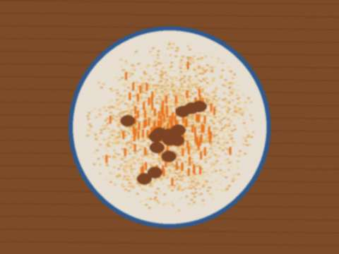

Nov182012
Sunday, November 18th, 2012 at 8:30 pm by Erkin
It is cold in the old house and mama keeps the stove going day and night, like in my childhood. I split wood with my father's axe, the handle is worn down exactly to my hand. In Moscow I never touched wood. Here the day starts with it.
I go to the Sunday Qurbana with mama and sit at the back of the nave, the same place. The bells, after seven years, I hear in my sleep.
Posted in Home | No Comments »
Oct92012
Tuesday, October 9th, 2012 at 8:40 pm by Erkin
I am home.
Moscow to Tashkent by plane, Tashkent to Namangan in a shared taxi, Namangan to Uchkurgan, then the crossing at Kyzyl-Tuu: three hours in the queue, the Uzbek side, then our side, then a bus to Tash-Kömür and my cousin's car up the river. When I saw the cathedral on the hill from the road, I asked my cousin to stop the car. I stood there five minutes. He did not say anything. A good cousin.
Mama made kümöch and the soup and cried. Aigerim has two children now that I only knew on the photo.
The blog title will stay "Letters home". Now they are letters from home.
Posted in Home | 1 Comment »
Aug262012
Sunday, August 26th, 2012 at 9:00 pm by Erkin
I gave notice. On the last day the brigade made a table in the cabin: Mahmud's plov, Zoya Pavlovna's pie, salad, tea, one bottle of the other thing for Dmitry. Sherzod gave me a knife with a horn handle from Namangan. Mahmud said nothing, and then he said: "In the spring I will come to see the cathedral on the hill." I said he must come. We hugged for a very long time.

The farewell table in the cabin. Mahmud's plov, not stirred.In seven years I built nine houses, I have a tan on my neck and a bad knee. And a ticket for October.
Posted in Moscow | 1 Comment »
Mar112012
Sunday, March 11th, 2012 at 10:30 pm by Erkin
Irad Day. The Iradi association rented a café in Lyublino, 80 people came, from all over Moscow. The anthem from a phone, everybody stood. Ulak on the TV from the internet, beshbarmak from a lady from Nurzhan, a komuz player who works as a cleaner at the Kazan station and plays like a bird.
I decided. In autumn I go home. Seven years is enough.
Posted in Moscow | 1 Comment »
Dec42011
Sunday, December 4th, 2011 at 10:20 pm by Erkin
I decided in my head: this is the last winter. I will tell no one yet, not even Aigerim, so that nobody gets excited for nothing. I save 12,000 roubles a month. I need 400,000 for the guest house idea (I have not told anybody about it either, except you, internet).
Dmitry the Clock says in January there will be a new object in Lyublino, a big one, a year of work. I said I'll think about it. I will think about it all the way to March.
Posted in Moscow | 1 Comment »